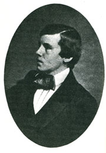
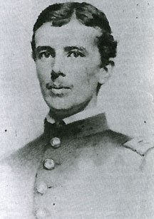
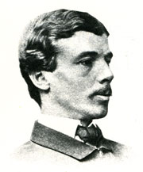
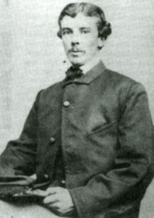
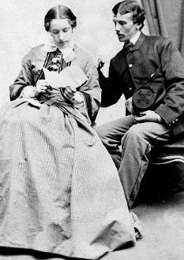
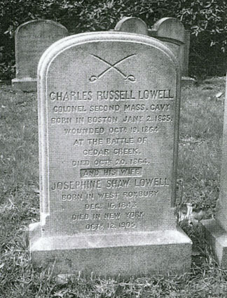

|
Union cavalry officer Charles Russell Lowell epitomized
New England's ideal soldier in the Civil War. "I do not
think there was a quality," declared an admiring Maj. Gen.
Philip H. Sheridan, "which I would have added to Lowell. He
was the perfection of a man and a soldier." Brig. Gen.
Wesley Merritt, Lowell's immediate superior during the 1864
Shenandoah Valley campaign, said that "a more gallant
soldier never buckled on a saber. His coolness and judgment
on the field was unequalled." By the time of the 1864
Valley operations, the ambitious and conscientious
twenty-nine-year-old Lowell had compiled an impressive
military record. His aggressive fighting against Lt. Gen.
Jubal A. Early's forces near Rockville, Maryland, in July
1864 had impressed General Sheridan, who assigned Lowell to
command the Reserve Brigade in Merritt's First Division of
cavalry in the Army of the Shenandoah. Sheridan's decision
soon bore fruit, as Colonel Lowell proved himself a
first-rate combat leader in the battles of Third Winchester
and Tom's Brook. Lowell's heroic actions at Cedar Creek on
|

Charles R. Lowell, 1854
|
|
|
October 19, 1864, and death the next day from wounds
received in the battle spurred northern papers to eulogize
him as the "Beau Sabreur" of the United States. While
Lowell fought at Cedar Creek, a commission was signed
promoting him to brigadier general. Lowell's family,
friends, comrades, and contemporaries mourned his death and
memorialized his life. They believed his service
demonstrated perfect sacrifice and courage, ennobling the
terrible bloodletting that continued unabated. Charles
Russell Lowell emerged, as did his brother-in-law Col.
Robert Gould Shaw of the 54th Massachusetts Infantry, as one
of New England's greatest martyrs to unionism. Today,
students, faculty, and visitors can contemplate a marble
bust of Lowell by Daniel Chester French in Memorial Hall on
the beautiful grounds of Harvard College.
In reality, Lowell's career as a soldier from 1861 to
1864 was far from perfect. Like most mid-level officers of
the Civil War, he had to learn from the ground up how to
make men obey his orders and respect his leadership. His
distinguished family lineage, Harvard education, and
scholar's command of literature and philosophy meant little
to soldiers on the battlefield. Rather, repeated
demonstrations of courage in battle, an aggressive tactical
approach, a willingness to bear the hardships of camp and
campaign, and a concern for the welfare of his men shaped
his reputation. Lowell's words reflected his deepest
belief: "A man is meant to act and to undertake, to try and
succeed in his undertakings, to take all means which he
believes necessary to success."
This essay will judge how well Lowell succeeded in "his
undertaking." For him, those words meant more than success
on the battlefield. Victories were meaningful only if they
served the ideals of union and freedom for which the United
States was fighting. These ideals, Lowell asserted, should
be honored in thought and deed. He felt an obligation to
take up arms and urged others of his background to do so.
"If Southern gentlemen enlist," he insisted, "Northern
gentlemen must also." Like the sons of the southern
slaveholding class, the sons of New England Brahmins
enrolled in the army at a higher rate than the rest of the
population. Graduates of Harvard far exceeded the general
rate of enlistment, and many were imbued with the
righteousness of their actions. "This fight," Lowell wrote
early in the war, "was going to be one in which decent men
ought to engage for the sake of humanity." At times, he
believed politicians and generals betrayed the people's
trust on both the home front and the battle front. In
addition, he often expressed concern about the northern
people's level of support for the war effort. "I do not see
that this war has done us as a nation any good," Lowell
complained in late 1864, "except on the slave question,--in
one sense that is enough; but how is it that it has not
taught us a great many other things which we hoped it
would?" Lowell honored the democratic principles of the
United States, and he believed that the nation could only
flourish with millions of what he called "useful citizens."
Many of his views necessarily strike the modern reader as
elitist and painfully idealistic, but Lowell viewed his
military service as both a career and a sacred call to
reinvigorate a non-slaveholding Union. Born in 1835 to a
prominent Boston family, he was groomed early for leadership
in business and public service. Lowell's region, his class,
and his education shaped him in distinctive ways. His
parents, Charles Sr., and particularly his mother Anna Cabot
Jackson, instilled in him a deep sense of social
responsibility, not only toward ending slavery but also
toward helping the less fortunate. Historian Reid Mitchell
has placed the Lowell family, which also included a brother
James and two sisters, Harriet and Anna, within a category
he describes as "public families." Public families, both
North and South, devoted time and resources to civic service
in the arenas of government, politics, church, and
philanthropy. Many in New England supported reform
movements, such as abolitionism, that were relevant to the
issues leading up to the Civil War; members of these
families also articulated new principles for an expansive
American nationalism in the postwar decades. Had Charles
Russell Lowell survived the war, he undoubtedly would have
been a leading figure in this effort.
|

Charles Russell Lowell, Captain, 6th U.S. Cavalry, Colonel, 2nd Massachusetts Cavalry
|
|
|
Children of public families were expected to carry on
their parents' and grandparents' tradition of philanthropy
and service. Lowell offers an excellent example of the
process, demonstrating a clear consciousness of his "duty"
as an officer, as a class exemplar, and as a devoted citizen
of his country. This civic burden emanating from the
private realm was especially heavy and momentous for the
children who came of age during the Civil War. Lowell, at
least, judged the sacrifice worthwhile. Upon hearing of the
death of his fiancee's brother, Colonel Shaw, while leading
his African American troops in battle at Fort Wagner, Lowell
wrote: "I see now that the best Colonel of the best black
regiment had to die, it was a sacrifice we owed,--and how
could it have been paid more gloriously?" Here he linked
Rob Shaw's personal heroism with a far more important ideal
of service in the cause of erasing slavery from the country.
Lowell's inner life was animated by the ideas put forward
by a close family friend, the transcendental philosopher and
writer Ralph Waldo Emerson. Emerson's transcendentalism
empowered the individual over institutions and celebrated
the goodness inherent in all men. Emerson inspired many
followers, including the young Charley Lowell, to liberate
humans from all fetters, especially slavery; with freedom
came the possibilities of improving all society through
individual self-culture. Importantly, individuals had a
role to play when government institutions floundered, as
during the secession crisis. "When the public fails in its
duty," Emerson wrote, "private men take its place. . . .
This is the compensation of bad government,--the field it
affords for illustrious men." Throughout his short life,
Lowell yearned to make explicit and real the link between
thought and action, between the private basis of his
intellectual beliefs and spiritual morality and the public
display of moral courage. During the war, he strove to be
one of Emerson's "illustrious men."
This essay deliberately offers more than an assessment of
the military career of one officer during a particularly
important campaign. It proceeds on the assumption that a
more fully realized portrait of Lowell will be gained
through an understanding of the cultural, social, political,
and military forces that created the hero-soldier who died
at Cedar Creek. That understanding, in turn, will be
valuable in illuminating a perennial topic for those who
study the Civil War soldier: "Why Men Fought."
In April 1861, Charles Russell Lowell quit his job as a
manager for an iron mill in Mount Savage, Maryland. He
carefully packed his belongings into a carpetbag and walked
to Washington, D.C., to offer his services to the United
States military forces. As he walked along the dusty,
crowded roads, Lowell reflected on the experience and
talents he possessed that might make him an outstanding
soldier in the Union army. Outwardly modest, Lowell knew
that he was considered by his peers and powerful patrons to
be the best of his generation of Boston Brahmins.
A bright and energetic boy, Charley had excelled in both
school and sports. He ranked as "first scholar" at Boston
Latin School and, at age fifteen, the youngest of his class
at Harvard, where he flourished. One classmate remembered
that "of all the rest of us he won his way into my best
graces by his vivacity, his thoroughly boyish
open-heartedness, his eagerness for fun and frolic, and his
indifference to high rank which at once he attained by easy
strides and maintained." At college, Lowell became
intimately familiar with the classics of literature and
philosophy, counting himself a devoted follower not only of
Emerson--the "sage of Concord"--but also of the British
romantic poet Thomas Carlyle. He stood as a leader among
his group of friends, with many of whom he would later serve
in the war. Chosen at nineteen to give the valedictorian
speech at the 1854 Harvard Commencement, Lowell declared:
"If young men bring nothing but their strength and their
spirit, the world may well spare them, but they do bring it
something better: they bring it their fresher and purer
ideals."
Lowell's contemplative bent was paired with the urgent
necessity of righting the wrongs of society. He and his
siblings had been exposed from earliest childhood to the
literary and abolitionist reform circle of his uncle, James
Russell Lowell, perhaps nineteenth-century America's most
famous poet and critic. The elder Lowell doted on his three
nephews--the brothers Charley and James and their cousin
William Lowell Putnam. All three died in the Civil War. A
grieving uncle commemorated them in his poem "Memoriae
Positum," which included the heartfelt line, "I speak of one
while with sad eyes I think of three." Like his parents and
his Uncle James, Charley was a staunch, although never a
radical, abolitionist. In 1853, he stood among the angry
crowd on the steps of the Boston Court House when federal
marshals escorted the escaped slave Anthony Burns back to
the South and slavery. Shocked and shaken by the
experience, the teen-aged youth vowed to fight for
emancipation. Later in the decade, Lowell seriously
considered joining the free labor settlers in Kansas.
Unlike his Uncle James, Charley proved unable to pursue
his desired career as a writer or teacher who could
influence the masses through the power of his mind. Part of
a relatively impoverished branch of the powerful and wealthy
Lowell/Jackson clan, Charley, as the oldest son, was
expected to provide for the family. He did not want to be a
businessman, but he accepted his fate with little complaint.
"For our family, work is absolutely necessary," Lowell
wrote his mother in 1855 from the Ames Company Iron Mill in
Chicopee, Massachusetts, the first in a series of jobs where
he worked as an ordinary laborer. Characteristically, Lowell
strove to incorporate the idealism he treasured while
studying at Harvard onto the mill factory floor. Toiling
alongside workmen cleaning chains and filing iron brought
forth the "hope of helping them to have richer and nobler
lives." To that end, he started a "singing club," proposed
a lending library, and often spoke of supporting a mild
brand of socialism to mitigate capitalism's worst excesses.
Lowell's good intentions were colored by an earnest
paternalism, and one can only imagine the lukewarm
enthusiasm his reforms engendered among the laborers. His
great interest for improving the lives of the working poor
was predicated, however, on the assumption that one day he
would be a wealthy and influential man.
|

Colonel Charles Russell Lowell, 1863
|
|
|
That goal seemed well within his reach as he advanced
upward in business through his early twenties. John Milton
Forbes, a millionaire Boston industrialist and
philanthropist, had taken an interest in Lowell from the
youth's Harvard days. Forbes was already grooming him to
assume an important place in his thriving financial empire.
"One of the strange things," Forbes wrote to a colleague
after Lowell's death, "has been how he magnetized you and me
at first sight. We are practical, unsentimental, and
perhaps hard, at least externally. ... Yet he captivated
me just as he did you, and I came home and told my wife I
had fallen in love; and from that day I never saw anything
too good or too high for him."
Slight and wiry, the adult Charles Russell Lowell
possessed the fine features and sensitive mien of an
upper-class Bostonian. He had blue eyes, wavy brown hair
parted almost in the middle, and stood five-feet-ten in his
stocking feet. A devastating bout with tuberculosis in his
early twenties interrupted the upward trajectory of his
business career. One of his doctors predicted he would not
live past thirty, and the dire state of Lowell's health
prompted his wealthy grandmother to fund a two-year sojourn
in Europe. While abroad, months of horseback riding,
walking and hiking trips, and rest and relaxation made him
healthy and hardy. Lowell's stay encompassed trips to
Spain, Switzerland, Austria, Germany, and Algiers and
included attendance at the maneuvers of the French and
Austrian armies.
Upon his return home in 1856, Charley's family and
friends noticed a new steely quality to his gaze that belied
his gentle, mustached countenance and slender physiognomy.
He had acquired a reputation for expert horsemanship and
seemed stronger in both body and mind. Lowell threw himself
into his career, often working late into the night after
colleagues had gone to sleep. His reputation as a coming
man in the world of business was burnished further after a
stint working in Burlington, Iowa, an outpost in the Forbes'
railroad domain. He next accepted the position that took
him to the Maryland iron mill in 1860. Before leaving for
Maryland, Lowell eagerly followed the Republican convention.
An enthusiastic supporter of Abraham Lincoln, he wrote to a
Boston acquaintance: "How does the Chicago platform and
nomination please the Puritans,--it shows pluck, and that,
in an American, generally argues strength. Deliberately I
prefer Lincoln to Seward." In the equally momentous
wartime election four years later, Lowell again endorsed
Lincoln.
From the vantage point of a Border State, Lowell watched
the unfolding drama of the dissolution of the Union.
Shocked at southern secession, he temporarily cast aside his
commitment to emancipation: "Who cares now about the
slavery question? Secession, and the new Oligarchy built
upon it, have crowded it out." Then the Confederacy
attacked Fort Sumter, and men from his own state of
Massachusetts were killed in Baltimore on their way to
protect the United States capital. As the stakes grew more
serious, Lowell observed: "I fear our Government will be
hard pushed for the next six months--it can raise 75,000 men
easily enough, but can it use them after they are raised?"
Lowell quit his job to join the regular army. In the first
spring of the war, it seemed, as one of his friends later
said, "the "past was annihilated, the future was all."
The Charles Russell Lowell who walked to Washington City
in late April 1861 was anything but the typical
inexperienced youth eager to enlist in the giant volunteer
army being raised to suppress the rebellion. He was mature,
intelligent, and a close and ardent student of the politics
and character of America. Yet, like the vast majority of
the early enlistees, he knew little of military life and
nothing of war. Eager to learn, he approached the
beleaguered capital determined to bring himself to the
attention of those in charge of the U.S. Army. "I think . .
. you will agree," he wrote his mother, "that I am right in
trying to enter the regular army ... that while the
volunteers will furnish fully their share of military talent
. . . it will fall mainly on the Regular organization to
keep the armies in the field and to keep them moving." He
believed that the professional military desperately needed
officers with experience in the management of men in
business to defeat a dangerous, treasonous, but worthy foe.
A weary Lowell finally reached Washington and on April 23
wrote to Senator Charles Sumner of Massachsuetts:
Dear Sir,--Have you at your disposal any appointment in
the Army which you would be willing to give me? I speak and
write English, French, and Italian, and read German and
Spanish: knew once enough of Mathematics to put me at the
head of my class at Harvard--though now I may need a little
rubbing up: am a tolerable proficient with the small sword
and the singlestick: and can ride a horse as far and bring
him in as fresh as any other man. I am twenty-six years of
age, and believe I possess more or less of that moral
courage about taking responsibility which seems at present
to be found only in Southern officers.
Lowell waited impatiently for an appointment. While
doing so, he helped the War Department by slipping into
Virginia and Maryland and observing military preparations.
He also acted as an agent for the state of Massachusetts.
His decisive action and concise reports so impressed Sec. of
War Simon Cameron that he recommended Lowell be sworn
immediately into the newly expanded regular army. On July
1, 1861, Charles Lowell received his first orders as a
newly-commissioned captain in the 3rd United States Cavalry,
a well-regarded unit under the command of Lt. Col. William
H. Emory. The appointment to a regular unit marked an
unusual distinction for a civilian."
After joining the 3rd Cavalry, Captain Lowell journeyed
to Pennsylvania and Ohio to recruit for the regiment, which
was shortly renumbered as the 6th U.S. Cavalry. Recruiting
promised tedious duty in the best of times, and Lowell
encountered many frustrations with the process. In
Pennsylvania, he expressed dislike for the heavily anti-war
sentiments of Democrats in the area, while in the Western
Reserve of Ohio another unpleasant surprise awaited him.
Lowell observed humorously that it must have been "a
glorious place to recruit ... two months ago." Now, he
complained, "none but married men or elderly men are left."
Although Lowell managed to scrape several companies
together, he despaired of his lot as "a mounted officer
without a horse, a Captain without a Lieutenant or a
command." Anxious to get to the battlefield, he consoled
himself by consulting books on the elements of military
science and brought the same intense drive to his military
career that previously characterized his business
endeavors."
Summer turned into fall, and finally the quota was
filled. Lowell took charge of a squadron (two companies) of
cavalry and looked forward to his first experience with the
reality of war. "Like every young soldier," he said, "I am
anxious for one battle as an experience." That experience
remained in the future as the 6th Cavalry trained near
Washington, where the northern diarist George Templeton
Strong viewed it on parade and drill. Strong commented
about "one of the captains, Lowell of Boston, a notably
promising officer, admired and commended by the regular
brethren as the best appointment ever made from civil life."
Frustrated with the inaction, except for drilling, Lowell
entertained doubts about the way the war was being waged:
"The Administration seems to me sadly in want of a
policy--the war goes on well, but the country will soon want
to know exactly what the war is for."
In the spring of 1862, the 6th Cavalry participated in
Maj. Gen. George B. McClellan's ill-fated Peninsula
campaign designed to capture Richmond. Lowell was pleased
that his brother James, an officer with the 20th
Massachusetts Infantry, was nearby. Captain Lowell's first
taste of action occurred on May 5 at the battle of
Williamsburg, where he commanded two companies in a cavalry
attack. Outnumbered by southern forces, Lowell led his men
in five charges, eventually succeeding in driving the enemy
off. He made himself conspicuous by his aggressive
fighting, which resulted in the capture of many Confederate
prisoners. After Williamsburg, his command was ordered to
go down the Peninsula. In a parting of the ways for Charley
and James, the 20th Massachusetts stayed to face the
Confederates in the heavy fighting of the Seven Days'
battles. Although disappointed to be out of the action,
Lowell was recommended for brevet major and received an
appointment to McClellan's staff.
Pride in his early battle accomplishments paled alongside
a tragedy that struck close to home. On July 4, 1862, James
Jackson Lowell died of wounds received at the battle of
Glendale. James was a lawyer in civilian life and, like his
older brother, had finished first in his class at Harvard.
Charley and their sister Anna, a nurse who worked on a
hospital ship at Harrison's Landing (later she served in the
same capacity in the Amory Square Military Hospital in
Washington, D.C.), tried unsuccessfully to find James, who
was unavoidably left behind by his comrades to die on the
battlefield. Lowell consoled his grieving mother. "Your
two last letters," he wrote her, "have told me more about
Jimmy than I had learned from his friends here--they seem to
bring me very near to him and also to you and Father."
Captain Lowell had mixed feelings as he took up his
duties on McClellan's staff. Throughout the war, he
generally gave high praise to the controversial and
charismatic "Little Mac." Like many in the Army of the
Potomac, Lowell admired McClellan's ability to inspire, to
train, and to lead his soldiers. He also judged him to be a
superb strategist. At the end of the Peninsula campaign,
however, Lowell expressed less enthusiasm regarding
McClellan's ability to win the smashing victory that would
end the war. Lowell's unit met up with McClellan at
Harrison's Landing, where the army gathered glumly to return
to Washington D.C. "He prepares very well," Lowell remarked
about McClellan to a close friend who was visiting at the
time, "and then doesn't do the best thing--strike hard."
Despite reservations about McClellan, Lowell took pride
in his service with the Army of the Potomac: "I have had my
training in what I may now without boasting call a "crack"
regiment." His next opportunity for action came in the
Maryland campaign. Lowell acted as a courier at the battle
of Antietam on September 17, 1862. During that bloody day,
he rode to the harried Union corps commanders delivering
orders from McClellan. While so engaged that morning, he
encountered part of Maj. Gen. John Sedgwick's Second Corps
division retreating under severe fire just north of
Sharpsburg. Lowell rallied the men and led them back into
the fighting. After watching him in action, an officer
remarked, "I shall never forget the effect of his
appearance. He seemed a part of his horse, an instinct with
a perfect animal life. At the same time his eyes glistened
and his face literally shone with the spirit and
intelligence of which he was the embodiment. He was the
ideal of the preux chevalier." Lowell managed to escape
serious injury but did not emerge unscathed: "His horse was
shot twice, his scabbard cut in two, and the overcoat on the
saddle spoiled by a piercing bullet." Afterward, Lowell
calmly resumed his staff duties. For his spectacular act of
bravery during the battle, the young captain was selected by
McClellan to carry thirty-nine captured Confederate battle
flags from Maryland for presentation to President Lincoln.
Once again, he was put up for promotion, and once again he
was denied.
Lowell remained loyal to McClellan during what proved to
be trying times for the "young Napoleon," but he was anxious
to get another posting. He did not view Antietam as a
triumph and anticipated the downward shift in McClellan'
fortunes. "This is not a pleasant letter," he wrote to his
mother, "we have gained a victory--a complete one, but not
so decisive as could have been wished." He wrote another
negative assessment for John M. Forbes, with whom he
corresponded frequently. Forbes, an active and influential
Union supporter, relied upon Lowell throughout the war for
advice and insight on Union military policy and practice.
Before and after McClellan's forced departure from command,
Lowell often expressed concern to Forbes and others about
the troubled state of the Army of the Potomac. According to
Lowell, lax discipline, low morale, and "bickerings and
jealousies" among officers of every rank plagued the army.
"I see so many good officers kept back, because they are too
good to be spared, and so many poor ones put forward merely
as a means of getting rid of them, that I never worry," he
wrote, reassuring his fiancée that he did not mind being
ignored for promotion. Contemplating with disgust a vicious
attack made by Maj. Gen. Joseph Hooker against McClellan,
Lowell declared to Forbes in October: "[P]ersonally, I like
Hooker very much, but I fear he will do us a mischief if he
ever gets a large command. He has got his head in the
clouds."
In the midst of such worries, Lowell received an offer
and an opportunity that he had been waiting for since the
beginning of the war. Confederate victories in the
all-important Eastern Theater brought a serious strain to
Union military planning. High casualties and losses from
short-term enlistments forced Lincoln to call for 300,000
volunteers in the summer of 1862. Worse was yet to come.
It was commonly assumed that even this number would fall
short of necessary manpower, and that the United States
government, like its Confederate counterpart, would resort
to an unpopular national draft. Other changes seemed
necessary as well. The Peninsula campaign and Second
Manassas had driven home the painful lesson that northern
cavalry could not match their southern counterparts.
Reorganization followed, including plans to establish a
Cavalry Bureau that could deploy Union resources more
effectively and efficiently. A concerted effort to recruit
more men into an expanded and revitalized cavalry corps was
also undertaken. In New England, Amos A. Lawrence, a
wealthy and patriotic Boston businessman, offered to help
raise a three-year regiment of northern horsemen. Hailed
by other prominent Bostonians, including Lowell's mentor
Forbes, Gov. John A. Andrew authorized a new unit to be
called the 2nd Massachusetts Cavalry Regiment. Lowell was
the unanimous choice to command. McClellan generously
released him from his staff duties, and Lowell arrived in
Boston as a colonel in November 1862. Exultant at this
change in duty, Lowell had achieved his long-held wish to
command a fighting regiment.
The 2nd Cavalry was immediately deluged with applications
from men who wanted to serve as officers. They came mainly
from Harvard students or graduates, who knew of and admired
Colonel Lowell's military record and longed for the
excitement of cavalry service. The lieutenant colonelcy
went to Lowell's close friend Henry S. Russell, who later
would command the 5th Massachusetts Cavalry, Colored. Capt.
Caspar Crowninshield, originally from the 20th Massachusetts
Infantry, was promoted to major and joined Russell as a
trusted and battle-tested veteran officer. William H.
Forbes, son of John Forbes, served as a captain. Officer
recruitment was accomplished with lightening speed and to
the satisfaction of the sponsors.
Filling the ranks was another matter altogether. During
the winter of 1862-63, Lawrence, Forbes, and Lowell directed
the recruitment from Camp Quincy, located near the State
House in the basement of Niles Block in Court Square.
Lowell's experience in Pennsylvania and Ohio in June 1861
had prepared him for the difficulties of attracting truly
patriotic volunteers. The situation had deteriorated a year
later. Men neither enlisted in great numbers nor, when they
did enlist, evinced great enthusiasm. More than ever, the
business of recruiting proceeded on a cold, almost
businesslike basis. Ever increasing bounties offered by
states such as Massachusetts played an integral role in
mobilizing northern men from early 1863 on, as did the
specter of conscription. Many of the men who were "made to
come or paid to come" would never be high quality soldiers,
and some proved actively mutinous.
Pickings were slim that fall and winter of 1862-63 as the
2nd Massachusetts Cavalry began recruiting in earnest.
Generous cash bounties provided by wealthy backers of the
regiment helped to fill two battalions (a battalion
consisted of five companies) with local men, but more were
needed. Members of the committee went to Canada and other
states to hunt for extra volunteers. When the state of
California offered two units to fight for the Union under
the Bay State's quota, Governor Andrew gratefully accepted
and paid $200 per soldier to cover traveling expenses for
the arduous and expensive journey. The men of the
"California Hundred" (Company A) and the "California
Battalion" (Companies E, L, M, and F) accounted for half of
the regiment and, unlike their eastern counterparts, had
experience with horses. Shortly after the New Year, the
California Hundred, under the command of Massachusetts-born
Capt. J. Sewall Reed, arrived at Camp Meigs in Readville, a
few miles from Boston.
In camp, Lowell trained the new recruits in regimental,
then squadron, and then individual drill. He also labored
to teach the volunteers how to ride their horses as cavalry
troopers. In a letter to John Forbes, Lowell commented, "My
experience is that, for cavalry, raw recruits sent to a
regiment in large numbers are worse than useless; they are
of no account and they spoil the old men,--they should be
drilled at least 4 months before they join their regiment."
Lowell enjoyed training the horses, perhaps more so than the
men who rode them. "I do not fancy horses who at the outset
do not resist," he wrote in 1864, "but they must be
intelligent enough to know when they are conquered, and to
recognize it as an advance in their civilization." By
February, Union headquarters pressed him to send a barely
trained battalion to protect the Washington, D.C., area.
"My first battalion leave on Thursday for Fort Monroe," a
worried Lowell wrote a friend on February 15. As he feared,
disaster marked the trip to Fort Monroe. "With the
exception of the Californians, the men are a disgrace to the
state which sent them," recorded Crowninshield. "They get
beastly drunk and fight among themselves draw the sabres &
pistols & cut & slash each other. ... I hope to be able to
make something like soldiers out of them--though like enough
many will desert to the enemy." It was not a particularly
auspicious beginning for the regiment, which, as with other
regiments formed at this time, would be afflicted with high
rates of desertion until the summer of 1864.
Lowell faced a tough challenge in instilling discipline
and professionalism in a sizeable number of the 2nd
Massachusetts recruits, who had been attracted to the cash
but not to the cause. Predictably, many of the local
recruits were unruly and resistant to training from the
outset. The new colonel was tested in a dramatic and
potentially damaging incident that required fast thinking
and decisive action. Early in the morning on April 9,
Lowell arrived at Camp Quincy to find a group of sixty-eight
freshly inducted soldiers in a state of mutiny against the
sergeant in command. He firmly announced that the
sergeant's order had to be obeyed even if the men found it
objectionable. He also promised a fair hearing of the men's
grievances after they carried out the order. Then, armed
with his Colt revolver, he warned: "God knows my men, I
don't want to kill any of you; but I shall shoot the first
man who resists. Sergeant, iron your man." When the
sergeant made a move toward the mutineers' leader, all the
malcontents rushed him, many with knifes. Immediately,
Lowell shot and killed twenty-three-year-old William
Pendergast of Boston, whom he identified as one of the
ringleaders. He then ordered the rest of the men off to
drill and immediately walked to Governor John Andrew's
office to report his action. After Lowell left, Andrew
turned to an aide and said: "I need nothing more, Colonel
Lowell is as humane as he is brave." Five of the men were
held for trial at court martial proceedings. Later that
same day, the remaining members of the company were sworn
into service and taken to Camp Meigs.
Confident that he acted within the bounds of military
law, Lowell was vindicated by the verdict in a coroner's
inquest held shortly afterwards. He received strong
support from his superiors for his action, and he had shown
the men that he meant business. He had already gained a
reputation among his troopers as a harsh disciplinarian.
From Camp Meigs onwards, Lowell regularly issued orders
enforcing strict discipline in camp regarding drinking,
swearing, drilling, and the wearing of proper uniforms. He
believed that hard training afforded the best education for
good soldiers. The men of the 2nd Massachusetts who fought
under Lowell for the remainder of the war did not always
understand or appreciate the point of endless drilling. By
1864, however, Lowell was known for his fairness combined
with firmness and earned the respect, if not the love, of
his troopers. A fellow officer remembered that "Lowell was
always kind to his men, duly considerate of all faults and
failures on their part, he was, nevertheless, strict in his
discipline."
From February to April 1863, Lowell supervised the
regiment's intensive training at Camp Meigs. Four hundred
more Californians joined the camp on April 16. Filled with
experienced riders and already acquainted with drill, the
new men expressed open contempt for the inept Massachusetts
recruits. Indeed, the men who brought the Bear Flag with
them represented the strongest part of the regiment and
embodied the best hope Lowell had for making the regiment a
crack cavalry force. Yet Lowell had a serious leadership
task with the Californians, most of whom had been born and
raised in the Northeast. Put simply, many had grievances
against what they perceived to be shabby treatment by both
their Massachusetts officers and Massachusetts comrades.
Perhaps the biggest protest concerned Lowell's decision to
break up some of the California units to give the eastern
men benefit of their superior background. His move earned
him the enmity of many enlisted men and a few officers who
understandably preferred to keep their cohesiveness and
preserve their California identity.
In 1863 and early 1864, Lowell was regularly attacked in
the pages of the Daily Alta, a major newspaper in the Golden
State. The Daily Alta's usual correspondent, Quartermaster
Sgt. Thomas H. Merry of Company L, wrote: "We have just
reason to complain of the colonel that the State chose to
command this regiment, Col. Lowell, has done all in his
power to spite us, both officers and men; he has divided and
broken up our battalion ... when it was specially agreed
our battalion should remain intact, under the command of our
own Major." In fact, there was no such agreement, but
rather than engage in a debate, Lowell ignored the
criticisms, preferring to let the glowing (and growing)
reputation of the 2nd Massachusetts assuage such bitter
feelings. When in July 1864 Lowell arranged for the
California men to be equipped with new Spencer repeating
rifles (paid for by the Bay State), he quipped that "it
would convince the men that there were some advantages in
belonging to a Massachusetts regiment--however revolting it
might be to their pride."
Another notable unit gathered at Camp Meigs. Col. Robert
Gould Shaw was recruiting for and training the 54th
Massachusetts Infantry, the first all-black northern
regiment. Colonel Lowell heartily approved of the
Emancipation Proclamation issued on January 1, 1863, and the
passage a month later of the "Negro Army" bill that led to
creation of the 54th. He also approved wholeheartedly of
its young commander: "I think it very good of Shaw ... to
undertake the thing." Lowell had earlier offered Shaw a
command in the 2nd Massachusetts, which the latter declined,
and the two colonels became close friends during the early
months of 1863. They had much in common. Scions of the New
England ruling clans, they shared a strong commitment to
unionism that was heavily tempered with the realities of
war, as well as great expectations and anxieties about what
the future held for their respective regiments. Their
mutual admiration increased when Lowell fell in love with
Shaw's sister, Josephine. After the couple announced their
engagement later that spring, Robert wrote to Charles that
he hoped "this war will not finish one or both of us, and
that we shall live to know each other well."
Lowell received orders in May to move his command to the
vicinity of Washington. Setting up camp east of the
Capitol, Lowell prepared for duty under the command of
Brig. Gen. Rufus King, who would oversee Union efforts to
protect the line of the Orange and Alexandria Railroad. On
May 19, Maj. Gen. Silas Casey reviewed the 2nd
Massachusetts. The review went very favorably, and Lowell
pronounced Casey "smiling and satisfied." Lowell and his
troopers soon left for the area around Centreville,
Virginia, where they guarded the supply and railroad lines
of the Army of the Potomac. Lowell was a keen analyst of
military strategy, and in a letter to Henry Russell dated
May 23 predicted a new Rebel movement. "You may rely upon
it, Harry, that Lee will not remain idle if we do; he will
send a column into Maryland again when the crops are ready:
I look for a repetition of what occurred last summer."
Meanwhile, Union headquarters desperately needed cavalry to
protect the supply lines to Meade's army at Warrenton,
patrol the nearby mountain gaps, protect the Orange and
Alexandria Railroad from Alexandria to Centreville, and
safeguard engineers who were directing the repair of bridges
and railroad lines. For excitement, the 2nd conducted the
occasional foray against Confederates found in the
countryside or the small towns nearby.
Despite the importance of his duty, Lowell agonized at
being left out of the developing "Pennsylvania Movement."
He had assumed that the 2nd Massachusetts would join the
Army of the Potomac to contest Robert E. Lee's invasion that
resulted in the battle of Gettysburg. It was not to be.
His unit was deemed too valuable to leave the Washington
area, despite many efforts made on his behalf and his own
letters and pleas to superiors, including Secretary of War
Edwin Stanton. In the ensuing months, Lowell's services
were requested by prominent officers such as Brig. Gen.
David McMurtrie Gregg, Maj. Gen. Samuel T. Heintzleman, and
Maj. Gen. Nathaniel P. Banks. All of the requests were
turned down promptly. "Stanton is so fond of us," Lowell
wrote with a touch of sarcasm, "that he keeps us on the safe
'front'--the 'front' nearest Washington, whereby I am
debarred from the rightful command of a brigade ... in
Gregg's division." Assigned to the Department of
Washington, the 2nd Massachusetts remained on the sidelines,
at least for the foreseeable future. "Don't you wish that
your Colonel was one who belonged to the Army of the
Potomac?" Lowell wistfully asked Josephine. "He does, I'm
sure."
Union military planners had another agenda for Colonel
Lowell, who so far had performed assigned tasks with great
competence and satisfactory results. From August 1863 to
August 1864, Lowell, first from Centreville and then Vienna,
was directed to put an end to the activities of the colorful
Maj. John Singleton Mosby and his 43rd Battalion of Virginia
Cavalry, also known as Mosby's Raiders. The slight, blonde
Mosby was a former lawyer, equally smart and wily, who
sported an ostrich plum in his hat, wore a gray cape with
bright red lining, and in general cut a cavalier's arresting
figure as he tore through the northern Virginia countryside.
His operations were intended to divert men and supplies
away from the major eastern Union army.
Officially sanctioned by the Confederate Partisan Ranger
Act of April 1862, as well as by orders Gen. Robert E. Lee
and Maj. Gen. James E. B. Stuart issued in March 1863,
Mosby's guerrilla operations were in full swing and creating
havoc by the summer of 1863. Based in Loudoun and Fauquier
counties but often extending their activities into Fairfax
and Prince William counties, the raiders operated south of
the Potomac and east of the Blue Ridge Mountains. Civilians
loyal to the Confederacy dominated this area between
Washington and the Army of the Potomac, which quickly became
known as Mosby's Confederacy. Mosby and his men enjoyed
rich opportunities for mischief, destruction, and plunder.
Their favorite targets were the well-laden Union supply
wagons.
To strengthen Lowell's hand against the elusive enemy,
Washington placed him in command of an independent cavalry
brigade. Included in this small brigade, which numbered
about 1,200 troopers, were the 13th and 16th New York, a
detachment from the 12th Illinois, and the 2nd
Massachusetts. Lowell trained and disciplined disparate
units, a difficult fact of life for him that would continue
when he took part in the Shenandoah Valley campaign. Lowell
received no advancement in rank to go along with the
increased responsibility, although many expected that he
would soon be promoted to brigadier general.
|

Charles R. Lowell, 1863
|
|
|
A harbinger of what Lowell could expect over the next
year occurred in late July. On the 30th, Mosby struck a
Union supply train near Fairfax Court House, capturing 28
sutlers' wagons, and a number of prisoners and horses. A
magnificent haul, it was popularly dubbed the "Ice Cream
Raid" because one of the wagons carried the desirable
dessert. At Centreville, Lowell learned of the raid and
immediately prepared his men for action. He led a
detachment to some woods near Aldie, where he made camp on
the evening of the 30th. Just after midnight, Lowell
observed a line of Mosby's booty-laden raiders pushing down
the road past the cavalry encampment. He organized an
attack that quickly disbursed the unsuspecting Rebels and
recaptured all the Federal wagons, men, and horses. Lowell
considered the victory incomplete, however, noting ruefully:
"we retook them all [the wagons] but didn't take Mosby, who
is an old rat and has a great many holes."
Typically, Mosby and his men ambushed a supply train,
stole horses, took prisoners and weapons, and then
disappeared into the Virginia countryside. The partisan
rangers, most of whom were native to the area, did not need
great numbers to be successful. Their ability to disband
instantly and then re-group at Mosby's bidding placed the
drastically undermanned Lowell in an impossible situation.
His strategy was by necessity reactive. One of his first
orders increased the number of troopers protecting the
vulnerable convoys traveling between Alexandria and
Centreville. Although this improved security greatly, the
lack of Union manpower for this type of activity guaranteed
continued ambushes. Lowell answered reports of Mosby's
depredations with swift operations that attempted to
recapture the stolen materials, while inflicting heavy
casualties on the raiders. To this end, Lowell launched
counter-raids, or sweeps, whose success often depended on a
small, carefully nurtured, but often untrustworthy network
of Union sympathizers. Federals captured 18 raiders and 35
horses in November 1863 using vital information procured
from one such informant, a southern deserter named Charlie
Binns. Lowell combined raids with dismounted attacks to
more aggressively fight the enemy.
Advantages or knowledge gained from friendly southerners,
however, were more than offset by bitter Virginians eager to
hide, to provision, and to supply Mosby with detailed
intelligence on the whereabouts of Lowell's men once they
left the relative safety of their camp. Sweeps in response
to large-scale plunder were just one part of contesting the
raiders in Mosby's Confederacy. Other tasks were also
dangerous. Picket duty, regularly-scheduled reconnaissance
missions, or specific scouting expeditions led by Lowell or
another appointed officer sometimes resulted in disaster, as
was reported to Lt. Gen. J.H. Taylor on December 13, 1863.
"This morning at about 3 o'clock," wrote Lowell, "the picket
at Germantown were surprised by a party of guerrillas,
dismounted, some twenty strong. They crawled up and shot
(without any warning), mortally wounding two men and
capturing five horses and their equipment."
Understandably, morale dropped and frustration rose among
the Federal troopers. Another attack on a picket post on
December 20 brought forth an outburst from a California
soldier who complained that the colonel "had no regard for
the lives and liberties of our men; sending five men to
stand picket three and four miles from camp, where no
assistance can reach them until it is too late." Specific
criticisms of Lowell's military acumen, however, failed to
account for the larger picture. The give-and-take of
guerrilla warfare created a vicious circle. Mosby's
depredations invited Union attacks on southern property.
The fresh hatred engendered by reprisals pushed even more
civilians into active support for the guerrillas, leading to
more destruction. "If there is any locality," wrote a
soldier in the 2nd Massachusetts, "that has more than
another suffered from the ravages of war, it is
[Centreville] ... Nearly every house ... has been
either burned or torn down, and the whole country around it
has been devastated."
Lowell and his brigade moved in September from
Centreville to Vienna, about fifteen miles from the capital.
There, in comfortable quarters, he would spend the fall and
winter of 1863-64 stalking Mosby. Charles A. Humphrey, who
served as chaplain for the 2nd Massachusetts, kept a journal
that recorded some of the life at Vienna. The
Harvard-educated Humphrey and Lowell had much in common,
including friends, relatives, and a love of discussing
"metaphysics and mental philosophy." Both expressed
frustration at the difficulties of fighting war without
clear guidelines. A highly principled man, Lowell had
serious reservations about the kind of warfare he waged in
Virginia. He was particularly distressed by having to roust
and punish local civilians for hiding or otherwise aiding
the partisan rangers. "I don't at all fancy the duty
here,--serving against bushwhackers; it brings me in contact
with too many citizens,--and sometimes with mothers and
children." Lowell relished the times when he could let
someone off easy, as he did with "a Quakerlike looking old
lady," or with "a little fellow, only sixteen years old" who
was drafted against his will. Conversely, he could be harsh
against a well-defined enemy. "I had the satisfaction the
other day," he wrote, "of arresting the Lieut.-Colonel who
had charge of the draft in this and the neighbouring
counties, and hoped I have stopped it for a time." Thus he
commanded with a light hand, trying to distinguish between
the enemy and those he deemed innocent victims. Whether
many Virginians appreciated Lowell's calculated kindnesses
is another question.
Apart from his complex interaction with Confederates,
Lowell provoked some carping within his own ranks. Major
Caspar Crowninshield privately voiced concerns in letters to
his mother. "I don't consider him much of a soldier," read
one of Crowninshield's missives regarding Lowell, "although
I do consider him the most talented young man I have ever
met ... but [he] is hasty inconsiderate and has not very
good judgment. He has however a most unbounded confidence
in his own ability." In another letter, Crowninshield
remarked that Lowell "is so very ambitious, that he
sacrifices everything for advancement." Crowninshield's
reservations did not reflect the warm public support Lowell
received from most of his officers.
Some enlisted men also found reason to complain about
elements of Lowell's leadership. One of the harshest and
most persistent critics was the aforementioned Thomas Merry.
Recounting a guerrilla ambush near Fairfax Court House on
August 24, 1863, that resulted in a significant loss of 100
trained cavalry horses, Merry portrayed Lowell's tactical
instructions (the colonel himself was not present) as
woefully ineffective. Merry urged that instead of trying to
fight by the rules Lowell should adopt purely guerrilla
methods. "But Col. Lowell," he groused, "will never do it,
for all the knowledge that he possesses of fighting Indians
or guerillas has been acquired by reading Sylvanus Cobb's
stories in the New York Ledger, while burning the 'midnight
oil' at Harvard, but what he is deficient in this, he more
than makes up in his knowledge of dress parades and
policeing [sic] camps." Merry's comments must be placed in
context. Even if Lowell wanted to engage in a "slash and
burn" policy against the guerillas and their supporters,
which he did not, he was constrained by Union policy
articulated in 1863. Draconian action entailed the mass
removal of civilians from their homes and destruction of the
surrounding countryside. This policy had proved
counterproductive recently in Missouri, and Lincoln's top
military advisor, Maj. Gen. Henry W. Halleck, issued an
order forbidding such actions except in specific, and dire,
circumstances.
The war against Mosby's partisans proved immensely
frustrating to Lowell and his command. The affair at
Fairfax Court House that upset trooper Merry prompted
Secretary of War Stanton to order a court of inquiry.
Extremely upset at Stanton's action, Lowell believed
strongly that even the minor rebuke issued was unjust and
would adversely affect his chances of promotion. "I do not
consider myself at all to blame," he wrote, "and really I
shall not care for the finding." He added, "Heintzelman had
told me he was more than satisfied, was gratified at what
had been done." Lowell did not blame his men for their
frustration, which he largely shared. He and most other
Union officers who fought the Virginia guerrillas hated
their jobs. The task of hunting guerillas hidden among a
supportive population was difficult and discouraging. At
best, Lowell's and Mosby's clashes resulted in a tactical
stalemate. The most desirable outcome for the Union would
have been the capture of Mosby. That outcome eluded both
Lowell and his successors. No clear-cut victory could be
claimed; no triumph easily reduced to an exciting newspaper
headline. Yet many of the men who comprised Lowell's small
brigade--led by the well-trained, drilled, and experienced
2nd Massachusetts--expressed visible pride in their service
at this time. Samuel W. Backus of Company L of the 2nd
wrote to his father on October 25, 1863: "We are always
ready, if we see or hear any rebs, to give them a fight.
Lately we have had a good many fights with them, in all of
which we have whipped them badly. I think that we have
crippled the gang of Moseby [sic] more than any other troops
ever did before."
In these months, Lowell staked out a position, born of a
growing experience, regarding the legitimate role
destruction of enemy property could play in meeting Union
goals. He believed officers should direct any such
destruction to ensure it did not degenerate into wanton
looting. Part of Lowell's thinking on this issue arose from
his interest in the fate of the 54th Massachusetts commanded
by his prospective brother-in-law, Robert Shaw. That
regiment's participation in the plundering and burning of
Darien, Georgia, on June 11, 1863, prompted Lowell to write
a letter of protest to William Whiting, the solicitor of the
War Department. On the other hand, Lowell increasingly
became convinced that liberating Confederate slaves and
enrolling them in Union regiments as free soldiers would
deliver a major blow against the southern rebellion. "Negro
Organization," he claimed, "is a more aggressive movement
than the Army of the Potomac has ever ventured upon, and in
a larger view, it is incomparably more important. Every
black regiment is an additional guarantee for that
settlement of these troubles which we regard as the only
safe one, and will continue to be a guarantee for the
permanency of that settlement when made." Later in June,
Shaw's heroic death at the battle of Fort Wagner on July 18,
1863, struck Lowell hard. "The manliness and high courage
of such a man never die with him," he wrote to Josephine,
"they live in his comrades."
Lowell's year of fighting Mosby's Raiders was interrupted
twice. He obtained a generous leave to marry Josephine Shaw
at her family's home in Staten Island in October. His new
bride happily accompanied him back to Vienna, where she
lived in camp with her husband for almost ten months.
Another break came in February 1864 when Brig. Gen. James H.
Wilson, the Cavalry Bureau chief for the Eastern Theater,
asked Lowell to reorganize the Giesboro' Point Depot near
Washington. Giesboro' Point was one of several huge depots
run by the War Department in which thousands of worn-out
horses were rehabilitated and thousands of new horses
gathered for use by the cavalry forces. Lacking enthusiasm
about Wilson's summons, Lowell explained to John Forbes: "I
left Vienna, not from choice, but because I had to. I am
sent over here to straighten out the Cavalry Depot. . . .
There has been no head here, and there was a sad want of
system."
Lowell accomplished the reorganization by the end of
March, returned to Vienna, and resumed active operations
against Confederate guerrillas on April 4. One foray,
taking place later that month, inspired Herman Melville's
poem "The Scout Toward Aldie." The writer had a cousin, Lt.
Col. Henry S. Gansevoort, who, along with Col. Henry M.
Lazelle, commanded the New York regiments in Lowell's
brigade. Gansevoort called Lowell "my model in arms" and
acquainted Melville with the brigade's record. Melville
visited the Vienna camp with his brother Alan in early April
and was impressed by Lowell, who, he wrote, embodied "beauty
and youth, with manners sweet, and friends." Melville also
was fascinated with Lowell's opponent, declaring, "Of Mosby
best beware." Knowing of Melville's desire to experience
the war, Lowell invited him to accompany a large
reconnaissance to check on reported sightings of Mosby and
the partisan rangers somewhere between Aldie and Leesburg.
The sortie netted eleven raiders but came up short, as Mosby
again eluded capture. Melville's published Civil War
writings experienced disappointing sales, but one stanza of
his poem captured perfectly the exhaustion Lowell's soldiers
felt after a days' long expedition: "The weary troop that
wended now-Hardly it seemed the same that pricked Forth to
the forest from the camp: Foot-sore horses, jaded men; Every
backbone felt as nicked, Each eye dim as a sick room lamp,
All faces stamped with Mosby's stamp."
As he neared the end of a year's fighting against the
raiders, Lowell's letters placed his war in perspective,
demonstrating that he had reluctantly accepted his fate. "I
dislike to have men killed in such an 'inglorious warfare,'"
he wrote, "but it's not a warfare of my choosing, and it's
all in the day's work." Lowell admitted that Mosby and his
men operated within legally sanctioned boundaries. He also
acknowledged that, in his judgment, the majority of Virginia
guerrillas were not deliberately cruel and criminal, as were
their unauthorized counterparts operating in Missouri and
Kansas. "Mosby is more keen to plunder," Lowell stated, "He
always runs when he can." Lowell concluded that "Mosby is
an honorable foe and should be treated as such." This
sentiment was in no way shared by many of Lowell's men, who
suffered humiliation, defeat, injury, capture, and death at
the hands of the guerrillas. "We must get over our nice
points of etiquette and treat them as rebels," a soldier
grumbled. The two top officers, however, admired each
other's style. Mosby later wrote that "of all the Federal
commanders opposed to me, I had the highest respect for Col.
Lowell both as an officer and a gentleman."
During and after the war, Mosby and his Partisan Rangers
enjoyed a romantic and dashing reputation, while their
Federal foes received scant if any recognition. Mosby
unquestionably inflicted major embarrassments on the Union.
There were good reasons for Confederate successes, including
the fact that the huge area claimed by Mosby's Confederacy
could not be covered adequately by the small number of
Federals assigned to the task. A judicious assessment of
Lowell's many cavalry operations would find much success,
especially in the spring of 1864. Union supply trains, on
mules and rails, rumbled through the countryside on a
regular schedule to deliver their supplies relatively
unhindered. Lowell acquired a reputation as a superb
cavalry officer who could spend long hours in the saddle
without visible effect. Both of his commanding officers
expressed confidence in his abilities. Brig. Gen. Robert O.
Tyler, who led a division under Maj. Gen. Christopher C.
Augur in the Department of Washington, provided this
assessment: "With Colonel Lowell in command of the cavalry
I have no fear of trouble." Augur himself praised Lowell for
his successful engagements in April, stating, "I desire to
commend in strong terms the zeal and ability displayed by
Col. Lowell in these various expeditions. In July,
Lowell's "inglorious warfare" against the partisan raiders
came to an end when events moved swiftly to bring him under
the command of Maj. Gen. Philip Henry Sheridan in the
Shenandoah Valley.
|

Charles Russell Lowell and Josephine Shaw, 1863
|
|
|
In early 1864, Abraham Lincoln reinvigorated the Army of
the Potomac with new leadership and a grand strategy to win
the war. The president brought east the hero of Shiloh,
Vicksburg and Chattanooga, General Ulysses S. Grant, who
planned to activate all Union armies simultaneously to
strike Confederate forces in Virginia and Georgia, capture
Richmond and Atlanta, and end the war swiftly. An important
part of Grant's strategy was to clear the Shenandoah Valley
of Rebel soldiers while destroying its agricultural bounty.
Grant's proposed destruction of Valley farms and fields
prompted Lee to order Lt. Gen. Jubal A. Early's Second Corps
to the Valley with orders to remove the Federals in time for
the harvest. Early defeated Maj. Gen. David Hunter at the
battle of Lynchburg on June 18 and then turned north and
invaded Maryland. He vanquished another hapless Union
general, Maj. Gen. Lew Wallace, at the battle of the
Monocacy on July 9, before setting his sights on Washington
D.C. Lee hoped Early's operations would lower northern
morale by creating panic and chaos, as well as relieving
Grant's pressure on the Army of Northern Virginia by drawing
back to Washington thousands of Federal troops currently
around Richmond and Petersburg.
On July 10-11, Early moved toward Washington and got as
far as Fort Stevens, part of the defenses surrounding the
city, after which he was forced to retreat. Lowell and the
2nd Massachusetts were ordered to harass Early's rear as he
withdrew from Washington. While doing so successfully on
July 14, Lowell and his men were surprised in the streets of
Rockville, Maryland, by an attack from elements of Early's
retreating army. Lowell and his troops quickly realized
there would be no Federal victory gained on this day, only
an escape from disaster, if possible. As panic infected
some of his men, Lowell shouted "Halt!" and "Dismount!"
waving his sword above their heads. One of his soldiers
later wrote about "the magical effects of his voice in
asserting a calm authority." Their confidence restored, the
soldiers formed a strong defensive line. Using their new
Spencer repeating weapons to good effect, Lowell and the 2nd
Massachusetts repulsed several charges by southern cavalry.
The men performed superbly in a dangerous situation and,
though suffering high casualties, retired in good order with
their pride intact. Lowell explained his philosophy of
command in this way: "You can usually make a man obey if
you speak quickly enough and with authority."
General Early's summer offensive was not finished. On
July 30, cavalry attached to his small army attacked and
burned Chambersburg, Pennsylvania, further alarming the
northern population. This action, in conjunction with "Old
Jube's'" move on Washington, caused U. S. Grant to intensify
his drive to shut down Confederate operations in the
Shenandoah Valley. In early August, against the background
of the siege of Petersburg and Sherman's battle for Atlanta,
Grant placed Philip Sheridan in charge of defeating Early.
Although Sheridan's background had been in the infantry,
Grant appointed the son of Irish immigrants as chief of
cavalry in the Army of the Potomac at the beginning of the
Overland campaign. Sheridan quickly turned the cavalry into
an impressive fighting force, infusing it with an exuberant
aggressiveness that delighted Grant. When the Shenandoah
operations bogged down, the general-in-chief turned to
Sheridan. Grant ordered "that nothing should be left to
invite the enemy to return, take all provisions, forage, and
stock wanted for the use of your command. Such as cannot be
consumed, destroy." Grant spelled out the means to achieve
the end that had eluded so many other Union generals and
armies. He combined four military districts to make up the
"Middle Military Division" and created the Army of the
Shenandoah, some forty thousand strong and including the
Army of the Potomac's Sixth Corps, the Nineteenth Corps
(recently arrived from Louisiana), and various units that
had been operating in and near the Shenandoah Valley.
Sheridan established headquarters at Harpers Ferry, where he
presided over the assembling of his new army.
On July 26, Lowell was released from service against
Mosby and instructed to report with the 2nd Massachusetts
for immediate duty in the Shenandoah Valley. Under the
direction of the Army of the Shenandoah's chief of cavalry,
Brig. Gen. Alfred T. A. Torbert, Lowell took charge of the
Third Brigade in General Wesley Merritt's First Division.
The Third Brigade, officially organized on August 9 and also
known as the Provisional Brigade, included parts of the 2nd
Massachusetts and the 14th and 22nd Pennsylvania and 1st
Maryland regiments. Lowell had precious little time to
prepare his men for action. On August 6, Sheridan reported
to Grant that he had "ordered Col. Lowell with a portion of
his command to make a reconnaissance on the south side of
the river in the direction of Martinsburg." Sheridan soon
began his move forty miles up the Valley to Strasburg, where
Early's forces were entrenched. "Colonel Lowell led the
advance, and next day met the enemy six miles north of
Winchester, and after a sharp skirmish turned them about and
drove them pell-mell through the town," related a report of
the movement. On August 11-12, Lowell's brigade helped to
secure the fords across Opequon Creek for the Union Army,
which Sheridan declared indispensable to his plan of attack.
With that engagement, Lowell began nine weeks of constant
movement and fighting. Due to alarm about Confederate
reinforcements, Sheridan's army made an abrupt exit from
Strasburg, and on August 16 Lowell received responsibility
for guarding Sheridan's rear as he moved down the Valley
toward Halltown, near Harpers Ferry. While protecting
Sheridan's retreat, the cavalry was ordered to destroy
anything of use to the enemy. "I had the right rear,"
Lowell explained to his wife, "with orders from Grant to
drive in every horse, mule, ox, or cow, and burn all grain
and forage--a miserable duty." Sheridan, who despised
southerners, ruthlessly carried out Grant's instructions,
expressing a grim satisfaction at a job well done.
Afterwards, Sheridan wrote, "Reduction to poverty brings
prayers for peace more surely and more quickly than does
destruction of human life." Lowell expressed more
ambivalence. He executed his superiors' orders to destroy
the countryside only after concluding that such destruction
would end the conflict. Nevertheless, he worried that his
actions might violate the rules of war, remarking that
"[t]he war in this part of the country is becoming very
unpleasant to an officer's feelings."
An incident during the third week of August reveals the
character of fighting in the early phase of the Valley
campaign. Leaving the area around Cedar Creek on the 17th,
Lowell and his brigade had been lightly engaged all day when
they were suddenly pressed by a more numerous enemy force.
Ordered to fall back, Lowell constructed a defensive
position on a small hill that offered some protection from
Confederate artillery. He brought along a "quaker gun," a
piece of wood on wagon wheels that from a distance resembled
a cannon. Lowell instructed his men to "load" the wood,
which immediately attracted Rebel fire. He then swiftly
moved his men away from the hill, temporarily out of cannon
range. Lowell's orderly provided the rest of the story:
"We fell back from there. We went down a hill and through
the woods, and in a field we found our ammunition trains
that had not been moved. Then the Rebs were on top of the
hill behind us, and the Colonel had to turn and charge and
drive them back from the ammunition trains; then he
dismounted the men behind stone walls, and held them in
check until they moved the ammunition. I saw the Colonel
sitting behind the stone wall on his horse, and a shot from
a cannon struck the wall by him, and for a good while I
could not see him for the dust and stones that few over and
around him."
As this incident demonstrates, Lowell displayed his by
now polished skills to best advantage. His experience
fighting against Mosby's raiders made him one of Sheridan's
most valuable assets in the Valley campaign. "I never had
to tell him what to do," Sheridan remarked. Lowell
effectively combined mounted and dismounted attacks against
Confederate cavalry or infantry, as the situation warranted.
His skillful tactical maneuvers, which included a deadly
use of repeating rifles, were complimented by his inspiring
personal leadership. He led his men into battle in the full
uniform of an officer. Robert Williams of the 2nd
Massachusetts wrote his parents that Lowell "was always in
the front when we were moving toward the enemy and in the
rear when moving from them." That kind of display made
Lowell a conspicuous target, and he knew the risk it
entailed. But Lowell considered that risk a critical part
of his duty as an officer. Once queried as to why he
persisted in wearing an officer's crimson sash while pursing
sharpshooters, he replied: "It is good for the men to have
me wear it."
Lowell also employed his saber to good effect, even
though its usefulness was limited in the Civil War. On
August 26, part of Lowell's command participated in at
attack Sheridan ordered against Maj. Gen, Joseph B.
Kershaw's division. Expressing a desire to view Lowell in
action, Sheridan and his staff rode out to observe the
action. The Confederates were entrenched behind a rail
fence. Lowell observed that it was too high to leap over,
and so he galloped along its length and struck enemy muskets
with his sword while some of his troopers tore down sections
of the barrier. Private Samuel Backus recalled that "Lowell
led an attack against the advance of the enemy infantry and
charged up a rail fence, behind which they were intrenched,
and while he and a few of his men held them there--he
himself actually whacking their leveled muskets with his
saber--the rest tore down the barrier, and then they all
charged again." Lowell's troopers captured 7 officers and
69 enlisted men, along with guns and other equipment.
Sheridan turned to one of his aides and said, "Lowell is a
brave man." One awed soldier praised Lowell's courage and
described its effect on the men of his brigade: "Such a
noble scorn of death and danger they never saw before and it
inspired them with a courage that quailed at nothing."
Lowell thoroughly approved of General Sheridan's sending
out cavalry every day to meet the enemy. "It is
exhilarating," he exclaimed, "to see so many cavalry about
and to see things right again." The Valley's rolling
terrain and good roads favored cavalry engagements, and
Sheridan understood how to employ the mounted arm. He had
forged the Army of the Potomac's horsemen into a deadly
strike force that employed mobility, daring, and mastery of
rapid-fire carbines. In the Valley, Federal cavalry
contributed critically to Sheridan's success. The Union
commander skillfully employed three cavalry divisions, which
totaled more than 12,000 men, and twelve batteries of horse
artillery to help achieve victories that sped the
Confederates' final exit in the Valley. Lowell belonged to
a group of talented officers who brought the Union cavalry
to its greatest successes in battles such as Third
Winchester, Fisher's Hill, Tom's Brook, and Cedar Creek.
For his part, Lowell provided a favorable assessment of his
commander: "I like Sheridan immensely, he is the first
general I have seen who puts as much heart and time and
thought into his work as if he were doing it for his own
exclusive profit. He works like a mill-owner or an
iron-master, not like a soldier--never sleeps, never
worries, is never cross, but isn't afraid to come down on a
man who deserves it."
Sheridan also approved of his subordinate. On September
9, he appointed Lowell to lead the newly-constituted Reserve
Brigade in Merritt's division, which was composed of the
1st, 2nd, and 5th U.S. Cavalry, Battery D of the 2nd U.S.
Artillery, the 6th Pennsylvania, and Charley's own 2nd
Massachusetts. Now in charge of three seasoned regular
units, Lowell rightly concluded that Sheridan had paid him a
high compliment. "I believe Sheridan is entirely satisfied
with what we have done," he confided to John Forbes in
relating news of his new command. Lowell and his troopers
would be fighting alongside Col. James H. Kidd's First
Brigade and Col. Gen. Thomas C. Devins's Second Brigade, and
they would distinguish themselves in several notable
engagements beginning with Third Winchester.
In September, Lee recalled a portion of Early's army to
Richmond, opening the way for Sheridan to attack the
weakened Confederates at Winchester. Before dawn on
September 19, General Merritt ordered Lowell to attack the
enemy's infantry and establish position across the Opequon
Creek north of Winchester. Lowelll's troopers moved toward
the Creek, where they scattered a Confederate picket line
and captured several dozen prisoners. Throughout a long
day's battle, Lowell's brigade joined other Union cavalry in
pressuring Jubal Early's left flank. "In this campaign it
had been Lowell's aim to educate his command up to attacking
infantry and artillery," observed Edward W. Emerson in his
edition of Lowell's letters, "and he showed the way himself,
leaping the ditch or breastwork or rails, sword in hand."
As part of the fight, Lowell attacked a battery with a small
group of troopers who soon found themselves face-to-face
with Rebel cannons. One of the pieces fired, killing two
horses, including Lowell's. Lowell swiftly found another
horse and took the guns. General Merritt reported how the
"noble Lowell, with his heroic little brigade, moved boldly
forward," scattering Rebels in confusion. "It was a noble
work well done--," concluded Merritt, "a theme for the poet;
a scene for the painter." The next day, Lowell wrote to his
wife about his horse troubles. "Poor Billy was shot in
three places and is dead. ... During the afternoon, I had
one horse killed and two wounded,--all taken from
orderlies." Lowell half-believed himself to be invincible,
as if his death-defying actions were somehow miraculously
protected. "Isn't it lucky that I keep always well and
hearty?" he reassured his wife. "My friends never feel any
anxiety on that account." And although Lowell had always
ridden his mounts hard, during the Shenandoah campaign
thirteen horses were shot from underneath him. "You see I
am unlucky on horses," he ruefully quipped to a friend, ". .
. . it is the best form in which ill luck could come."
The day long battle at Winchester struck a bloody and
devastating blow to the Confederates, yet the persistent and
skilled Early showed no intention of withdrawing, much less
admitting defeat. Lee sent reinforcements to Early, and the
fighting continued. In late September and early October,
Federal cavalry engaged in a systematic destruction of the
Valley's countryside, known as "The Burning." Lowell did
not take part in the destruction but declared to Josephine
that "if it will help end bushwhacking, I approve it, and I
would cheerfully assist in making this whole Valley a desert
from Staunton northward."
In the wake of The Burning, Federal cavalry faced off on
October 9 against their Confederate counterparts in the
battle of Tom's Brook. Also known as "the Woodstock Races"
because of the 26-mile Confederate retreat after the battle,
this action marked the largest all-cavalry engagement of the
Valley campaign. William J. Miller's essay details the
tactical ebb and flow of the action, which need not be
reprised here. Tom's Brook underscored the superiority of
Sheridan's troopers in the Valley, and Lowell continued to
collect praise for his battlefield performances. On
horseback during the fighting, Lowell led his dismounted
soldiers into action and inflicted heavy losses on the
enemy. General Torbert reported that at Tom's Brook "[t]he
cavalry totally covered themselves with glory ...
Brigadier-Generals Merritt and Custer and Colonels Lowell
and Pennington, commanding brigades, particularly
distinguished themselves--" A trooper in the 2nd
Massachusetts recalled that in the battle Lowell exposed
himself to Confederate bullets so fearlessly that he "dared
not look at him for I knew he would fall, and yet he came
back steadily and all rights, his horse always wounded or
killed, and himself never, until I began to feel that he was
safe--but how, God alone knew." Overall, Lowell's conduct
fully justified the words of one of Sheridan's aides, who,
though not speaking about Tom's Brook, insisted that there
was "no cooler head or better brain in all the army, no one
to be more absolutely relied upon."
The young colonel had for some time been performing the
duties of a brigadier general, but as yet no promotion had
materialized. His wife, his friends, and his supporters
expressed anger and puzzlement that he still wore the
"silver eagles on the yellow ground of a cavalry colonel."
Lowell refused to lobby for the reward that he nonetheless
thought was due him. Because he banned all reporters from
his camp, his exploits were not featured prominently in the
newspaper accounts of the battles. "I am very glad, my dear
Mr. Forbes," Lowell explained to his old patron, "that we
have not a hand writer among us. The reputation of
regiments is made and is known in the Army,--the comparative
merits are well known there." He heaped scorn on those
officers who cultivated the press and received supposedly
undeserved notoriety. Lowell admitted, however, that he
felt frustrated. In a letter to his wife on September 9, he
confessed weariness at always being in command of "patched
up affairs" that came with so many "prides and prejudices"
with which to contend. "I ... shall try to do what I
can," he concluded: "I don't think I now care at all about
being a Brigadier-General. I am perfectly satisfied to be a
Colonel, if I can always have a brigade to command;--that's
modest, isn't it?"
As his wry comment illustrated, Lowell was not a modest
man. He strove for excellence and expected, and even
yearned, for approbation. He also planned a postwar career
that combined personal ambition with a patriotic agenda.
Despite the constant fighting, Lowell found time to write a
series of letters to family and close friends in the first
two weeks of October. At first glance, his reflections
revealed a harder, more practical man than four years
earlier. He had given up the grand idealism that had
captured his youthful imagination. Instead, Charley advised
Henry Lee Higginson to "live like a plain republican," be
forever "mindful of the beauty and the duty of simplicity,"
and most of all, be an "unpretending hero," because if
America did not produce these "useful citizens" in great
numbers, then "we are not going to have any Country."
Lowell warned others to throw their support to Lincoln
and the Republican Party in the upcoming elections. To
Charles E. Perkins, he sounded a desperate note: "I hope
and trust and believe that you are doing all you can for
Lincoln,--and I believe that McClellan's election would send
this country to where Mexico and South America are. Do what
you can to prevent it." He depicted the war's results as "a
great revolution [that] has been going on." Lowell was
convinced that the conflict would end in the near future.
The time had come for the men who successfully led the Union
armies to be prepared to guide the country through
Reconstruction. "What should we do with a peace," he asked,
"until events have shaped out a policy which a majority of
people at the North will recognize as the necessary one for
a successful reorganization of the Southern territory and
Southern institutions?" The sacrifices made by the country
must not be wasted, according to Lowell. He had always
believed in the importance of leadership, but his wartime
experiences confirmed that importance a thousand times over.
In the fall of 1864, Lowell expressed confidence that he
would meet expectations in peacetime just as he had in
wartime. Survival was the key. In one of his last letters
to Josephine, Lowell wrote, "I don't want to be shot till
I've had a chance to come home. I have no idea that I shall
be hit, but I want so much not to now, that it sometimes
frightens me."
On October 12, Lowell's brigade arrived near Cedar Creek,
a stream that lay in the shadows of Massanutten Mountain.
The Valley seemed peaceful, with Early nowhere in sight.
Lowell concluded that the Confederates' will to fight was
utterly destroyed. He speculated that momentarily his unit
might be sent on a raid to Charlottesville. Lowell joined
many others in thinking that operations were finished.
Sheridan had carried out Grant's two-part plan to destroy
the enemy forces and their breadbasket. The harvest that Lee
hoped to save was lost; potential starvation loomed for his
soldiers. The feisty "Little Phil's" success bred
overconfidence. Sheridan believed his victory was secured,
and he decided to leave the Shenandoah Valley to join Grant
at Petersburg. Parts of the Sixth Corps were already moving
east toward Ashby's Gap. Sheridan and Stanton planned to
meet in Washington within days to discuss the further
redeployment of the Army of the Shenandoah.
On October 15, the army lay near Middletown, arrayed
behind the meandering Cedar Creek. Sheridan's left wing
consisted of Brig. Gen. George Crook's two divisions from
the Eighth Corps, and to his right, two divisions from
General William Emory's Nineteenth Corps. Lowell's and Col.
James H. Kidd's brigades camped about four to five miles
west of Emory. Their duty was to protect the army's right
wing at Cedar Creek, which consisted of three divisions of
Maj. Gen. Horatio Wright's Sixth Corps. Bivouacked on the
relatively flat ground behind the creek, Wright's divisions
were dangerously exposed to attack from the west. Lowell
positioned his troopers nearly a mile west of the Sixth
Corps encampment, behind Devin's and in front of Kidd's
brigades. Although outwardly calm, the scene included
disturbing signs that Early had not in fact withdrawn.
Sheridan called back the departing troops from the Sixth
Corps when, on October 16, intelligence reported Rebel
reinforcements being sent to Early's aid. Despite these
precautions, Sheridan neither called off his trip (he
expected to be back within twenty-four hours) nor expressed
undue worry about the vulnerable position of his troops. On
October 18, Sheridan left for the capital city, leaving
General Wright in charge during his short absence.
Many veterans later remembered that evening as
particularly beautiful, with a full moon rising in the night
sky. Lowell arose just after midnight, preparing to probe
the right for an enemy presence. On October 19, reveille
for the Reserve Brigade was at 3:30 A.M. Before troopers
finished breakfast, they heard shots echo in the distance.
Kidd's Michigan brigade had exchanged fire with some
Confederates, and Lowell sent pickets groping through a
foggy mist to investigate. Meanwhile, thousands of
northern soldiers slept, blissfully unaware that Confederate
troops had spent the night moving en masse around the north
slope of the Massanutten intent on destroying the entire
Federal army with a single blow. Although much smaller than
Sheridan's, Early's army throughout the campaign had
exercised fully their advantage of experience and intimate
knowledge of the countryside--an advantage never more
evident than in the planning and execution of this imminent
attack.
At dawn, the Rebels struck the camps of Crook's Eighth
Corps. Within half an hour, the entire left of the Union
army was in flight, panic was spreading to the Nineteenth
Corps, and a major disaster appeared inevitable. Lowell and
Kidd, hearing heavy fire on the army's far left, awaited
instructions, but none came. Heavy fog still shrouded the
battlefield, and the two officers discussed whether or not
to move in the direction of the fire. Neither knew that
orders had been given to move the cavalry from the army's
right to its left, toward the Valley Pike. Lowell urged
action, but Kidd hesitated, fearing to contravene his
earlier orders. According to Kidd, he asked Lowell,
"Colonel, what would you do if you were in my place?"
Lowell answered, "I think you ought to go, too ... Yes,
I will take the responsibility to give you the order."
Lowell led the brigades toward a rise just north of
Middletown. From their position on a slight plateau, the
pair watched as the rising sun revealed the extent of the
Union calamity. Working hard to restore order, Wright
ordered Charley to move his brigade to support the frantic
troops now falling back rapidly. The time was 9:00 A.M.
The long cavalry column moved across the high ground and
behind the rear of the Nineteenth Corps. Brig. Gen. William
Dwight, a division commander with the corps, desperately
sought to reform his men. He stopped for a moment to watch
the cavalry and described the scene: "They moved past me,
that splendid cavalry. Lowell got by me before I could
speak but I looked after him a long distance. Exquisitely
mounted, the picture of a soldier, erect, confident,
defiant, he moved at the head of the finest brigade of
cavalry that at this day scorns the earth it treads."
Despite the gravity of the situation, Lowell must have
felt pride that severe fire from Confederate batteries did
not cause any of his men to falter or the column to break,
except for adjustments for the injured. His brigade had
proven stalwart in recent battles, and now his horsemen
again showed their courage. At 9:30 A.M., Lowell and Kidd
arrived on high ground northeast of Middletown where Brig.
Gen. George W. Getty's Second Division of the Sixth Corps
was forming after putting up a strong fight on a hill near
the Middletown cemetery. Lowell traversed the pike,
deployed his men on the east side, and waited for direction
that came within minutes. Merritt ordered him to attack a
troublesome Rebel battery--located behind some stone walls
that formed a right angle to one of the roads bordering the
northern edge of the village--that supported Brig. Gen.
Gabriel C. Wharton's brigades.
Lowell immediately ordered most of his brigade to
dismount and await the order to attack. He led the rest in
a charge to force the Confederates back to a line of trees.
While doing so, he had his thirteenth horse in thirteen
weeks shot from under him. Quickly procuring another, Lowell
returned to a desperate fight. General Merritt described
Devin's and Lowell's brigades as confronting a "living wall
of the enemy, which ... emitted a leaden sheet of fire
upon their devoted ranks ... " Lowell and his men came
under considerable fire not only from Rebel artillery but
also from sharpshooters positioned on the roofs of houses in
Middletown. Two charges later, a sniper's bullet hit Lowell
in the chest, stunning him. The projectile did not penetrate
his skin, but its force collapsed a lung, precipitating
bleeding, faintness, and hoarseness. Despite the injury,
Lowell continued fighting. Devin and Custer provided
reinforcements, and the Confederates, facing a considerable
number of Union cavalrymen, withdrew temporarily to a second
set of stone walls. Lowell refused to leave the field,
insisting that he be allowed to remain in command despite
his weakened condition. "He was wounded painfully in the
early part of the day soon after which I met him," wrote
Wesley Merritt shortly after the battle: "He was suffering
acutely from his wound but to ask him to leave the field was
an insult to him." Lowell was carefully placed on the
ground and covered with an overcoat provided by one of his
staff.
By late morning, the Confederates believed that they had
won a major battle. They had routed decisively two of the
three Union corps. This time, however, success made Jubal
Early overconfident. A lull in the fighting allowed a
goodly number of Union troops to reorganize for the expected
second wave of battle. Sheridan, who was on his way back to
Cedar Creek from Winchester, heard the sounds of guns.
Moving purposefully southward, Sheridan reached his army by
noon, and with his return demonstrated a brilliant
generalship by regrouping his frightened soldiers and
planning a counterattack. "When I arrived," Sheridan
recalled, "this division [of Getty's Sixth Corps] and the
cavalry were the only troops in the presence of and
resisting the enemy." Sheridan's battle plan was simple and
inspiring. He ordered his soldiers to attack the
Confederates and regain their lost ground. Pride and
victory were the goals. Sheridan asked Lowell whether or
not he felt able to maintain his ground at the critical
juncture. He wrote later that "Lowell replied that he
could."
At 4:00 P.M., Sheridan launched his assault on a weakened
Confederate line. Faced with a renewed attack by a
reinvigorated Army of the Shenandoah, Early's army wavered
and then broke. Sheridan ordered Lowell's brigade to mount
a third charge against the same guns that earlier had posed
a formidable danger to Union soldiers. Unable to speak
above a whisper, and despite protests from his subordinates,
Lowell prepared to lead the attack. "I am well now," he
murmured. Lifted back onto his horse, Lowell formed his
brigade into battle line and led the charge on the battery.
Lowell immediately suffered another wound; the bullet
severed his spinal cord, leaving him paralyzed below the
waist. Caspar Crowninshield, who took command of the brigade
when Lowell fell, recalled that "[t]he charge in which Col.
Lowell was killed was a very desparate [sic] one. We
charged over an open field, the enemies infantry posted
behind a stone wall and with 4 or 5 pieces of artillery. We
charged all most up to the wall but we could not carry it.
Their fire was perfectly fearful. Grape and Cannister and
Musket balls came into us in perfect showers, we were driven
back with considerable loss." Merritt's report described
how "the fearless Lowell, at the head of as gallant a
brigade as ever rode at a foe, fell in the thickest of the
fray, meeting his death as he had always faced it--calmly,
resolutely, heroically. His fall cast a gloom on the entire
command." Sheridan wrote simply, "The accomplished Lowell
received his death-wound in this courageous charge."
|

Gravestone at Mount Auburn Cemetery, Cambridge, Massachusetts.
|
|
|
Lowell's brigade won the fight for the battery, and the
rest of the army salvaged victory from the wreck of the
morning's debacle. The Union triumph at Cedar Creek ended
Early's serious operations in the Valley and proved a
harbinger of the end of the Confederacy. Sheridan would
shortly rejoin Grant for the final months of the war.
Meanwhile, Lowell was transported to a house in Middletown
that served as a small hospital. His death was inevitable.
Dr. Oscar De Wolf, the assistant surgeon attached to the 2nd
Massachusetts, tended Lowell during his last hours. He
recorded that Lowell accepted his fate calmly. The stricken
colonel comforted the wounded around him and wrote a few
words of farewell to his pregnant wife. Crowninshield,
whose doubts about Lowell's leadership had been put to rest
in the preceding two months, visited Lowell briefly. He
recounted that Lowell told him that "my only regret is that
I cannot do something more for our war cause." Lowell
lingered until dawn on October 20, and then died peacefully
in his twenty-ninth year. "Colonel Lowell," wrote a
sorrowful Crowninshield, "died like a hero and he certainly
was one of the bravest of the brave." During the battle,
Lowell's commission as a brigadier general was signed, too
late to be delivered.
Lowell's funeral was held on October 28, 1864 at the
Harvard College Chapel. That Friday morning dawned cold and
rainy, matching the mood of the grief-stricken relatives and
friends who gathered to pay their last respects. Charley's
body, brought from his parents' house in a flag-wrapped
coffin, was placed by soldiers on the chapel altar decorated
with leaves, evergreens, and flowers. The attending minister
read lines from a poem composed to honor the Union dead:
"Wrap round his breast the flag that breast defended; His
country's flag, in battle's front enrolled: For it he
died,-- on earth forever ended; His brave young life lives
in each sacred fold." After the service, Lowell was buried
at Mount Auburn Cemetery in Cambridge.
Charles Russell Lowell--citizen and soldier--was mourned
as one of the Union's best and brightest. His peers
believed he embodied the virtues of the officer-gentleman:
honorable, brave, and fair. Many soldiers aspired to these
virtues, but few came as close as Lowell to manifesting them
in the hard reality of war. His heroic actions in the
battles of the Shenandoah Valley campaign, and especially at
Cedar Creek, demonstrated a magnificent fulfillment of his
military experience and his leadership potential. Those
actions also reflected the maturation of the individual who
had arrived at the battlefield in 1861 shaped by his social
class, by his education, by his political preferences, and
by his career aspirations. From beginning to end, his
stated motivation for fighting the war never changed--it was
for Union, and for freedom.
It is now commonplace for historians to question the
reputation of many Civil War heroes. This is especially true
with those who survived the war and wrote about their
experiences, often embellishing their accomplishments beyond
recognition. Those who did not survive the war have often
been ignored or their actions lost to the historical record.
They had no one to speak for them. Lowell was not forgotten
either in his own generation or to history. He was
memorialized as a hero by his family, his admirers, and
fellow soldiers. If they exaggerated his courage, if they
elided his failures, they can be forgiven. They had an
emotional stake in remembering Lowell and in honoring his
place in the larger conflict.
Professional histories of the war have often included
accounts of Lowell's wartime record, largely because of his
contribution to the Shenandoah Valley campaign. And military
scholars have usually portrayed Lowell's career in
complimentary ways that would meet with the approval of his
own generation. An added fascination for current scholars is
his elite status. Here, some historians have cast a shadow
on his reputation. They argue that his primary motivation
for fighting the war, as with others of his class, was not
idealistic or altruistic. Rather it was to re-establish
control over an unwieldy working class and immigrant
population that challenged the governing elite. The
undemocratic Union that emerged from the conflict would be
ruled by men like Lowell, who established their right to do
so by their self-serving participation in the war. Lowell
did not fit neatly into this category, and because he died
we can only speculate on how his life might have turned out.
We do know that despite his flaws, Lowell was tested in
war as never during peace, and that he was not found
wanting. "A man is meant to act and to undertake," he wrote,
"and to try and succeed in his undertaking." Lowell
excelled at the life of the soldier. He embraced the
hardship and discipline required on the battlefield. He
liked being an officer and believed that winning true
laurels rested on his willingness to assert leadership
through personal daring and courage. Lowell's achievements
must not be judged solely in the service of his ambition.
His stellar military record had meaning because it served,
in the famous phrase of Frederick Douglass, for "something
beyond the battlefield." On September 10, 1864, Lowell wrote
to friend and fellow officer, Francis C. Barlow: "There are
better things to be done in the Country, Barlow, than
fighting and you must save yourself for them too. It is
part of the vast tragedy of the American Civil War that
Charles Russell Lowell died before he could fulfill the
second half of his destiny.
Source: Joan Waugh, "New England Cavalier: Charles
Russell Lowell and the Shenandoah Valley Campaign of 1864,"
in The Shenandoah Valley Campaign of 1864, edited by
Gary W. Gallagher (Chapel Hill: University of North
Carolina Press, 2006), 299-340.
|